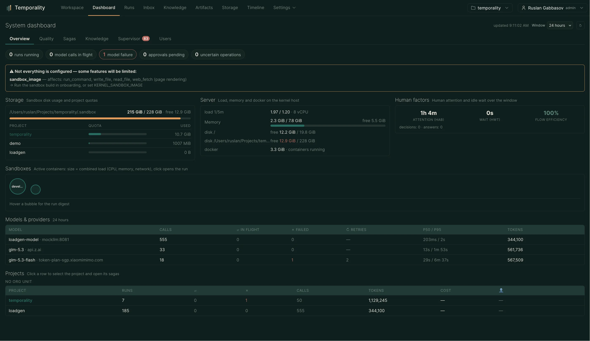

01
Структура
Организации, подразделения, команды, роли и участники — люди и агенты в одном дереве.
ПОДРАЗДЕЛЕНИЯ И РОЛИ Temporality
TemporalityTemporality — открытая операционная среда для организаций из AI-агентов и людей. Создавайте структуру, распределяйте работу, контролируйте исполнение, принимайте результаты и накапливайте опыт организации.
Один агент автоматизирует задачу. Организация агентов с ролями, ответственностью, общим контекстом и управлением способна выполнять целые направления работы.
Организации, подразделения, команды, роли и участники — люди и агенты в одном дереве.
ПОДРАЗДЕЛЕНИЯ И РОЛИПланы-графы, задачи, делегирование между агентами, зависимости и взаимодействие подразделений.
ПЛАНЫ И ДЕЛЕГИРОВАНИЕСостояние работы на досках руководителя, анализ проблем, эскалации и управленческие вмешательства.
ДОСКИ И ЭСКАЛАЦИИПроверенный опыт, знания и навыки накапливаются в организации и работают на следующих задачах.
ОПЫТ → ЗНАНИЯ → НАВЫКИЕдиная операционная картина — от активности подразделения до конкретного запуска и его результата.

Структура и состояние подразделений, активность запусков, планы и доски, текущие проблемы, эскалации и артефакты — с переходом от общей картины к трассе конкретного запуска.
Модельный супервайзер анализирует проблемы подразделений, отклонения и конфликты, готовит рекомендации — решения принимает человек.
AI АНАЛИЗИРУЕТ. ЧЕЛОВЕК РЕШАЕТ. АГЕНТЫ ИСПОЛНЯЮТ.Единая рабочая доска: планы и задачи, связанные запуски, состояние выполнения, проблемы и результаты — руководитель видит реальную работу организации, а не абстрактные метрики.
Управление потоками внимания: какие сигналы сформированы, кто их получил, какие решения приняты, какие вопросы ждут человека — доставка важного нужным участникам, а не лента уведомлений.
Диалог с агентом, ход исполнения, контроль доступа и происхождение знаний — все четыре слоя видны в одном интерфейсе.
Организационный уровень объединяет четыре архитектурных слоя: исполнение держит работу живой, наблюдение делает её прозрачной, контроль — управляемой, а обучение возвращает опыт в следующие задачи.
Долгоживущие задачи на Temporal: делегирование подагентам, планы-графы, фоновые команды, паузы для вопроса человеку. Перезапуск сервиса или деплой задачу не прерывают.
TEMPORAL WORKFLOWSСобытийный журнал каждого шага: вызовы модели и инструментов, живая консоль команд, реконструкция причин инцидента по трассе — от события до исходного вопроса.
ЖУРНАЛ И ТРАССЫВозможности и политики организации, подтверждения значимых действий и согласование документов, секреты вне досягаемости агента, сетевые ограничения и сигналы подозрительного поведения — с эскалацией человеку.
ПРАВА И НАДЗОРПроверенный опыт становится знанием со статусом и происхождением, знание — навыком с контрактом и версиями, а навык работает на следующих задачах. Система учится на своей работе.
ОПЫТ → ЗНАНИЯ → НАВЫКИОриентир для планирования: одна 6-ядерная виртуальная машина держит сотню одновременных агентов в тяжёлом сценарии — четыре хода модели, команды в песочнице, ожидание человека, ~9,4 минуты на прогон. Запуски — независимые workflow: при росте нагрузки масштабируется добавлением ресурсов, а не переписыванием.
Короткий путь до первого запуска: одна команда — модель, первый агент и песочница настраиваются в мастере онбординга.
Нужен Docker с Compose v2.23.3+ — образы уже собраны для amd64 и arm64. Скрипт проверит окружение, скачает compose-файл (оба нужных конфига уже внутри него), поднимет стек и дождётся готовности.
curl -fsSL https://raw.githubusercontent.com/RuslanGabbasov/temporality/main/install.sh | shОбновление и диагностика: … | sh -s -- update · … | sh -s -- doctor
Без установки вообще: открыть в GitHub Codespaces ↗
Один файл, конфиги внутри него. Флаг --wait держит команду до готовности стека.
mkdir temporality && cd temporality
curl -O https://raw.githubusercontent.com/RuslanGabbasov/temporality/main/docker-compose.yml
docker compose up -d --waitCompose поднимет PostgreSQL, журнал событий, интерфейс, Temporal, ядро агентов и веб-инструменты. По умолчанию берётся последний опубликованный релиз; конкретную версию можно закрепить переменной TEMPORALITY_VERSION в .env. Мастер онбординга проведёт первый запуск: проект → провайдер → песочница → агент из шаблона → модель-супервайзер.
Последний релиз v2026.2.113 · все релизы ↗ · обновиться: docker compose pull && docker compose up -d --wait
Для продакшена задайте KERNEL_SECRET_MASTER_KEY в .env до первого запуска — ключ шифрования секретов. Остальное настраивается в мастере.
Веб-интерфейс — на порту 3000, интерфейс Temporal — на 8233. Для локальной разработки авторизация выключена, если токены не заданы.
http://localhost:3000http://localhost:8233Temporality разделяет выполнение задач, журнал наблюдений и интерфейс анализа. Это позволяет разбирать прошлые запуски и пересобирать представление знаний без подмены исходной истории.
Temporal workflows · модель · команды агентов · MCP · sandbox · approvals · делегирование · саги · веб-исследования
Append-only события · knowledge projection · hint retrieval · bitemporal queries
Чат · трассы · таймлайн опыта · знания · бюджет проектов · настройки агентов и организации
Память (Mem0, Zep) запоминает. Трассировка (LangSmith, LangFuse) показывает. Фреймворки (LangGraph, CrewAI) оркестрируют. Temporality закрывает недостающий слой: надёжное исполнение и опыт с происхождением и жизненным циклом — связанные с людьми, правами и качеством. Модель — любой OpenAI-совместимый провайдер, инструменты — ваши MCP-серверы, каналы — ваши мессенджеры, данные — ваш PostgreSQL; журнал и подсказки доступны по HTTP любому агенту — включая агентов чужого фреймворка.
| Temporality | Память · Mem0, Zep | Трассировка · LangSmith, LangFuse | Фреймворки · LangGraph, CrewAI | |
|---|---|---|---|---|
| Долгоживущие запуски: переживают сбои, деплои и паузы | ✓ | — | — | ± чекпоинты — через их платформу |
| Человек в потоке: подтверждения и вопросы в мессенджерах | ✓ | — | — | ± interrupt() — без каналов доставки |
| Знания с происхождением, статусом и историей | ✓ | ± без верификации | — | — |
| Возврат релевантного опыта в новые задачи | ✓ | ✓ | — | — |
| Контур качества изменений: оценки, судья, гейт | ✓ | — | ± оценки промптов — без гейта применения | — |
| Навыки с контрактами, версиями и эволюцией | ✓ | — | — | ± описания задач — без контракта и версий |
| Документы с согласованием людей: черновики, круги ревью, версии | ✓ | — | — | ± interrupt() — без реестра и версий |
| Оргструктура, RBAC, политики, секреты | ✓ | — | ± роли в воркспейсе — без оргполитик | — |
| Семантический слой знаний: локальные эмбеддинги без облака | ✓ | ± облако или отдельный сервис | — | — |
| Модель-супервайзер: триаж сбоев, аномалии, конфликты знаний, кандидаты в навыки | ✓ | — | ± трейс-анализ руками | — |
| Метрики человеческого фактора: внимание и простой (HAB/HWT) | ✓ | — | ± латентность | — |
| Развёртывание у себя одним compose, данные у вас | ✓ | ± открытые версии с оговорками | ± LangFuse OSS; LangSmith — SaaS | ✓ |
✓ — из коробки · ± — частично или через обходные пути · — — нет. Сравнение отражает типичную специализацию категорий; детали зависят от конкретного продукта. Данные собраны из открытой документации на октябрь 2026.
Задачи живут в Temporal: перезапуск сервиса, деплой или уснувший ноутбук не убивают работу — она продолжается с места остановки.
У каждого знания — автор, источник и статус. Устаревшее не подсматривается, противоречия не теряются, а решаются.
Изменения агентов и навыков проходят проверку на эталонных кейсах и судью-модель с калибровкой. Человек утверждает — система не меняет себя сама.
Команды — в изолированной песочнице без привилегий; секреты агенту не видны; значимые действия — только после подтверждения; сверху — права доступа и политики оргструктуры.
Подтверждения и вопросы приходят в ваш мессенджер и решаются оттуда. Метрики HAB/HWT показывают, где поток упирается в людей — внимание это или простой.
Весь стек — одним docker compose: PostgreSQL, Temporal, журнал и интерфейс у вас. MCP-серверы и OpenAI-совместимые модели подключаются напрямую.
Temporality не заменяет организацию агентами: люди — полноправные участники структуры. Они получают задачи, принимают результаты и возвращают работу на доработку, а агенты обращаются к ним за решениями — через подключаемые каналы коммуникации.
Агент получает задачу и выполняет работу в своей песочнице.
Результат оформляется как документ с версиями.
Открывается круг согласования — человек видит работу и решает.
Результат принимается или возвращается на доработку; проверенный результат и опыт сохраняются в организации.
Temporality — инфраструктура, а не готовая организация со штатом из коробки: структуру, агентов и правила вы определяете сами и разворачиваете у себя.
OpenAI-совместимые провайдеры, MCP-серверы, подключение внешних агентных систем через предусмотренные интерфейсы, собственные специализации и навыки.
МОДЕЛИ · MCP · НАВЫКИПодразделения, роли, участники и полномочия, рабочие процессы и правила взаимодействия — организационная модель описывается в системе, а не в документе.
РОЛИ · ПОЛНОМОЧИЯ · ПРАВИЛАDocker Compose, PostgreSQL, Temporal, собственные модели и провайдеры — полный контроль над данными и секретами на вашей стороне.
COMPOSE · POSTGRES · TEMPORALЭто примеры возможных конфигураций, а не готовые отраслевые решения: подразделения, роли и агенты собираются под вашу задачу.
Research, Development, QA, DevOps: сложные задачи с делегированием, проверкой результатов и согласованием изменений.
ДЕЛЕГИРОВАНИЕ · ПРОВЕРКА · СОГЛАСОВАНИЕResearch, Analysis, Validation, Documentation: исследование, проверка гипотез, подготовка аналитики и контроль качества результатов.
ГИПОТЕЗЫ · АНАЛИТИКА · КАЧЕСТВОOperations, Compliance, Support, Analytics: регулярные процессы с человеческими согласованиями и контролем полномочий.
ПРОЦЕССЫ · СОГЛАСОВАНИЯ · ПРАВАПосмотрите исходный код, поднимите стек и проверьте весь контур: исполнение, наблюдение, контроль — и опыт, который возвращается в следующую задачу.
Средние и крупные команды с повышенными требованиями к безопасности, отказоустойчивости и измеримости: агенты работают в производственных процессах — и их работа проверяема, управляема и не теряется.
Self-hosted: ваши ключи, ваши данные, ваш PostgreSQL. Egress-прокси с allowlist на агента, секреты вне досягаемости, подтверждения значимых действий, аудит каждого обхода.
ВАША ИНФРАСТРУКТУРАЗадачи — durable workflows: деплой, рестарт или сон ноутбука задачу не прерывают. Ответы журналируются, ответы людей приходят из мессенджеров, и ничто не исчезает между шагами.
TEMPORAL DURABILITYЭволюция агентов через оценочный гейт: предложение применяется только с зелёным прогоном на кейсах — или с обоснованным оверрайдом в аудите. Регрессии по точности, ходам и токенам видны по версиям; откат — в один клик.
ВЕРСИИ И ОТКАТЫАгент живёт в ваших мессенджерах: вопросы формами и кнопками, файлы вложениями, групповые адресаты по подразделениям и должностям — «позови всех тестировщиков» работает буквально.
MATRIX · TELEGRAM · SLACK